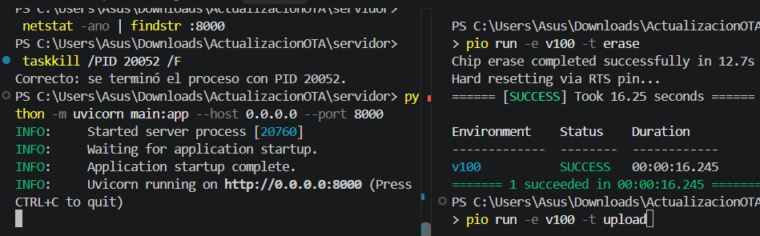
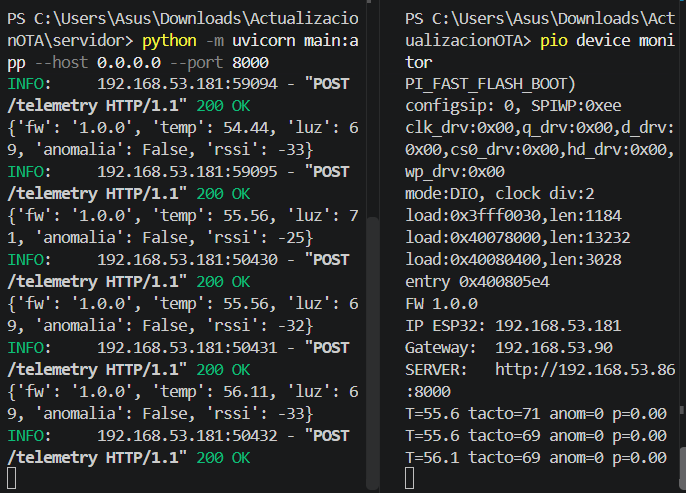
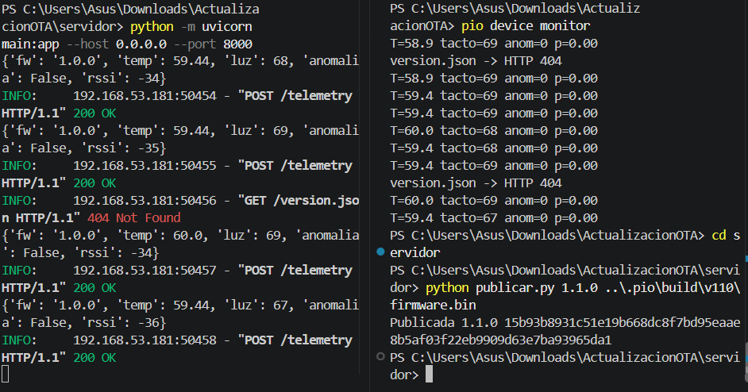
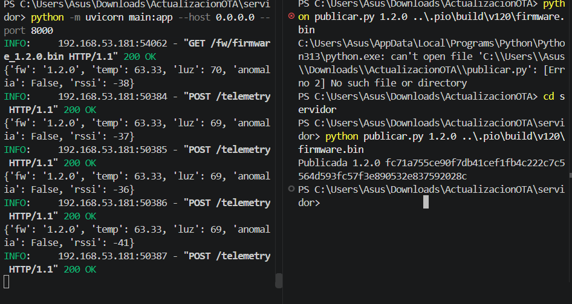

- Generado por
 1.14.0
1.14.0
|
ESP32 OTA con IA
OTA seguro, rollback por software y deteccion de anomalias con regresion logistica
|
Capturas y videos de cada paso. En las capturas, el servidor está a la izquierda y el monitor serie del ESP32 a la derecha. El proceso completo se explica en las páginas Actualización OTA paso a paso, Rollback por software y Modelo de IA: regresión logística.
Se borra la memoria flash del ESP32 (pio run -e v100 -t erase) y se sube la v1.0.0 por USB (pio run -e v100 -t upload). Así se parte de un equipo limpio.

El monitor muestra FW 1.0.0, la IP del ESP32 en el hotspot y la dirección del servidor. El servidor recibe la telemetría (POST /telemetry 200 OK). Como todavía no hay nada publicado, la consulta OTA responde 404.

Se publica la v1.1.0 con publicar.py. El script copia el .bin, calcula su SHA-256 y crea el manifiesto. En la captura se ve el 404 Not Found anterior y luego la publicación. En el siguiente ciclo de consulta (máximo 30 s), el ESP32 descarga el firmware, verifica el hash y se reinicia solo. Mientras descarga, los LEDs rojo y amarillo se alternan rápido.

Video: actualización OTA a la v1.1.0
Se publica la v1.2.0. El servidor registra la descarga (GET /fw/firmware_1.2.0.bin) y el ESP32 queda con rojo y amarillo fijos. A partir de aquí la telemetría llega con fw: 1.2.0.

Video: actualización OTA a la v1.2.0
Con la v1.2.0 corriendo, se esperan 2.5 minutos sin tocar el cable (calibración de 30 muestras). Luego se toca el cable: el tacto baja, la probabilidad p sube a 1.00, el LED amarillo parpadea rápido, el equipo muestrea cada 1 s y el servidor registra anomalia: True. Al soltarlo, vuelve a anom=0 y a los LEDs fijos.
Video: anomalía al tocar el cable (anom=1, p=1.00)
Estas pruebas se describen en Actualización OTA paso a paso y Rollback por software. Para documentarlas, copia la captura a la carpeta imagenes/ y agrega una línea como esta al final de este archivo:
@image html 08_rollback.png "ROLLBACK y regreso a FW 1.2.0"